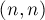
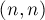
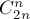

MAXimal
добавлено: 11 Jun 2008 11:16
редактировано: 2 May 2009 17:24
Содержание [скрыть]
Числа Каталана
Числа Каталана — числовая последовательность, встречающаяся в удивительном числе комбинаторных задач.
Эта последовательность названа в честь бельгийского математика Каталана (Catalan), жившего в 19 веке, хотя на самом деле она была известна ещё Эйлеру (Euler), жившему за век до Каталана.
Последовательность
Первые несколько чисел Каталана  (начиная с нулевого):
(начиная с нулевого):
Числа Каталана встречаются в большом количестве задач комбинаторики.  -ое число Каталана — это:
-ое число Каталана — это:
- Количество корректных скобочных последовательностей, состоящих из открывающих и закрывающих скобок.
- Количество корневых бинарных деревьев с
 листьями (вершины не пронумерованы).
листьями (вершины не пронумерованы). - Количество способов полностью разделить скобками множитель.
- Количество триангуляций выпуклого -угольника (т.е. количество разбиений многоугольника непересекающимися диагоналями на треугольники).
- Количество способов соединить
 точек на окружности непересекающимися хордами.
точек на окружности непересекающимися хордами. - Количество неизоморфных полных бинарных деревьев с внутренними вершинами (т.е. имеющими хотя бы одного сына).
- Количество монотонных путей из точки
 в точку  в квадратной решётке размером
в точку  в квадратной решётке размером  , не поднимающихся над главной диагональю.
, не поднимающихся над главной диагональю. - Количество перестановок длины , которые можно отсортировать стеком (можно показать, что перестановка является сортируемой стеком тогда и только тогда, когда нет таких индексов
 , что
, что  ).
). - Количество непрерывных разбиений множества из элементов (т.е. разбиений на непрерывные блоки).
- Количество способов покрыть лесенку
 с помощью прямоугольников (имеется в виду фигура, состоящая из столбцов,
с помощью прямоугольников (имеется в виду фигура, состоящая из столбцов,  -ый из которых имеет высоту ).
-ый из которых имеет высоту ).
Вычисление
Имеется две формулы для чисел Каталана: рекуррентная и аналитическая. Поскольку мы считаем, что все приведённые выше задачи эквивалентны, то для доказательства формул мы будем выбирать ту задачу, с помощью которой это сделать проще всего.
Рекуррентная формула

Рекуррентную формулу легко вывести из задачи о правильных скобочных последовательностях.
Самой левой открывающей скобке l соответствует определённая закрывающая скобка r, которая разбивает формулу две части, каждая из которых в свою очередь является правильной скобочной последовательностью. Поэтому, если мы обозначим  , то для любого фиксированного
, то для любого фиксированного  будет ровно
будет ровно  способов. Суммируя это по всем допустимым
способов. Суммируя это по всем допустимым  , мы и получаем рекуррентную зависимость на .
, мы и получаем рекуррентную зависимость на .
Аналитическая формула

(здесь через  обозначен, как обычно, биномиальный коэффициент).
обозначен, как обычно, биномиальный коэффициент).
Эту формулу проще всего вывести из задачи о монотонных путях. Общее количество монотонных путей в решётке размером равно . Теперь посчитаем количество монотонных путей, пересекающих диагональ. Рассмотрим какой-либо из таких путей, и найдём первое ребро, которое стоит выше диагонали. Отразим относительно диагонали весь путь, идущий после этого ребра. В результате получим монотонный путь в решётке . Но, с другой стороны, любой монотонный путь в решётке обязательно пересекает диагональ, следовательно, он получен как раз таким способом из какого-либо (причём единственного) монотонного пути, пересекающего диагональ, в решётке . Монотонных путей в решётке имеется . В результате получаем формулу: